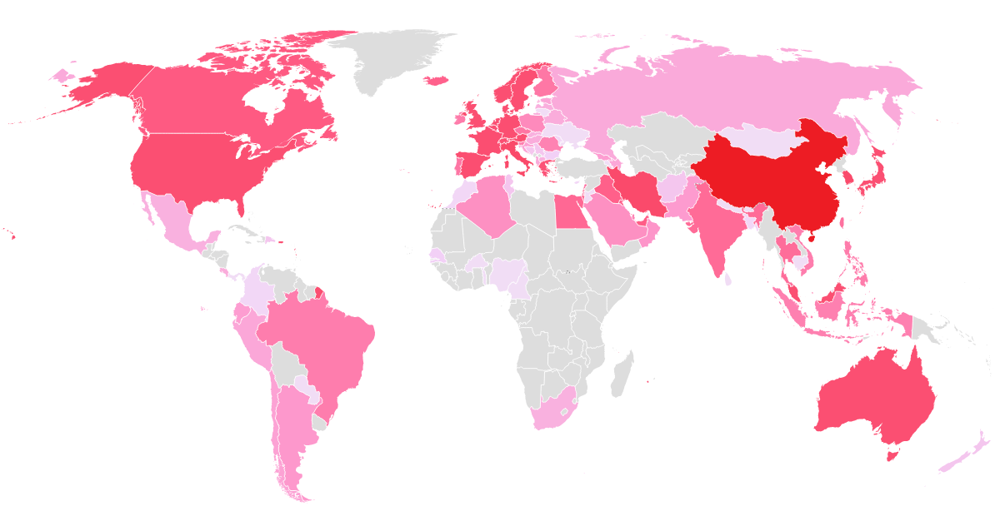

- 
Missing The Pre-Pandemic Times ? Fight The Pandemic !
1.Wash Your Hands !
Washing your hands is your superpower in the fight against the pandemic.Since soap is so very common and cheap it is easy to fail to appreciate how powerful it is. But the virus most likely enters your body via your hands and the research is clear that washing your hands with simple soap and water is the best thing you can do to protect yourself from infection.
2.Wear A Mask
The coronavirus is transmitted from one person to the next via small droplets produced by coughing, sneezing, and talking You don’t only wear the mask for your own protection. Mask wearing is altruistic too. The research clearly suggests that masks help to reach both of the main goals: They reduce the risk for the wearer to get infected – and they also reduce the risk of the wearer infecting others.
3.Watch Your Distance !
Some viruses can travel extremely far through the air. The measles virus, for example, can remain in the air for up to two hours and travel many dozen meters Luckily the coronavirus does not travel as far. But it too can travel some distance and to interrupt the chain of transmission it’s important to avoid being close to other people that might be infecting you. The British NHS recommends that you “stay at least 2 meters (3 steps) away from anyone you do not live with.” This is sometimes called ‘social distancing’, but since in these days of modern communication we can be social even if we are not physically close, physical distancing is more accurate
4.Risk communication and Awareness !
A fourth way in which everyone can contribute to the fight against the pandemic is in explaining what you know and making it understandable for everyone to follow the three Ws and for society to achieve the big social goals below.